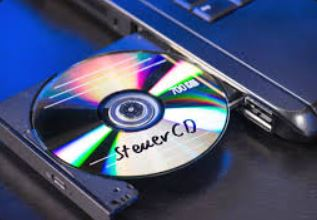

La unidad de CD de un PC, también conocida como unidad óptica, es un dispositivo que permite leer y, en algunos casos, grabar discos compactos (CD). Estos discos pueden contener música, software, datos y otros tipos de información. Las unidades de CD pueden ser de diferentes tipos, como: 1. CD-ROM: Solo puede leer discos. 2. CD-RW: Puede leer y grabar discos regrabables. 3. DVD: Además de leer CDs, también puede leer y grabar DVDs, que tienen una mayor capacidad de almacenamiento. Las unidades de CD suelen estar integradas en la torre del PC o pueden ser externas, conectándose a través de USB. Aunque hoy en día su uso ha disminuido debido a la popularidad de las descargas digitales y el almacenamiento en la nube, todavía son útiles para acceder a contenido físico o para transferir datos.
| Experiencias | Crecimiento | Aporte |
|---|---|---|
| Volar un helicoptero sobre la antartida | Tener mi casa de campo | Crear un libro |
| cononcer Corea del Sur | Viajar por el mundo | Crear una app y que se vuelva viral de tipo monetaria |
| Viajar por el mundo | Crear una app y que se vuelva viral de tipo monetaria |
Kanban es un método de gestión visual que ayuda a organizar y optimizar el trabajo, utilizando tarjetas para representar tareas y un tablero para mostrar el flujo de trabajo. Tablero Kanban: Es la herramienta principal, donde se visualizan las tareas en diferentes columnas que representan las etapas del proceso (por ejemplo, "Por hacer", "En progreso", "Hecho").